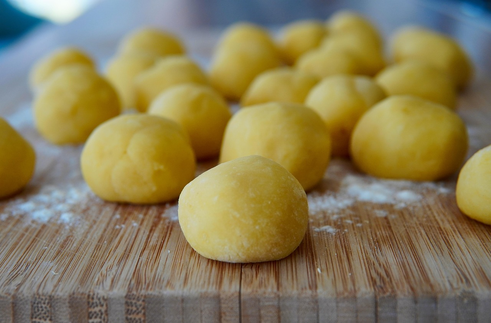

Home
Gnocchi

gnocchi is gnochi for potttat pasto. very good. much gnocchi. yummt. tasy. very much many sauces to put with. not so good as milk steak but rate 6/7 least
Ingredients:
- potat
- Flouwererrerer
- Eg
- Salty
want know to make? here how:
- big pot of boiling water with potat in. now drain watyer, but make sure kept potats. if drain potat no more gnocc
- put all ingredians with eacothre and kneed to ball
- split dough to different pieces. then make diffrent pieces into long snakeys
- chop up snake into bvite sciesze pieces
- fill big pot with boil water again, but this time put gnocchi in. then drain, but again, kept gnocchi and throw water out
- yum